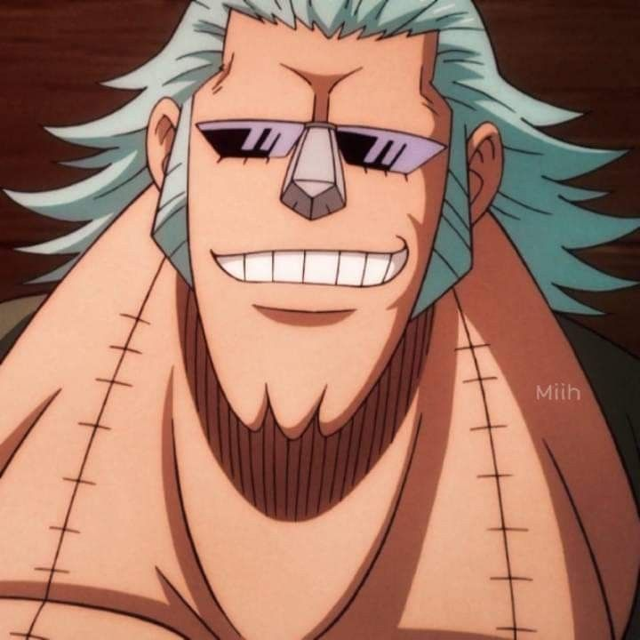

Franky
Franky é o construtor dos Piratas do Chapéu de Palha. Ele é um cyborg de 36 anos de Water 7 e foi introduzido na história como o líder da Família Franky, um grupo de desmantelamento de navios. Ele foi originalmente chamado de "Cutty Flam" até trocar seu nome original por seu apelido a pedidos de Iceburg para esconder sua identidade. Franky e seus seguidores foram inicialmente introduzidos como antagonistas do Arco Water 7 contra os Chapéus de Palha até as circunstâncias forçá-los a se tornarem aliados.Ele é o oitavo membro da tripulação dos Chapéus de Palha e o sétimo a se juntar ao bando de Luffy.